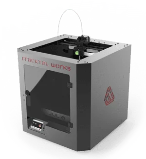
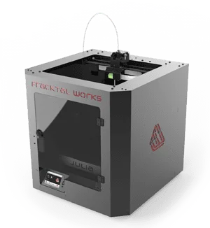

Fourth week is creative week,In this week we have design 3 diamentional objects by using 3D printer.We have used 3D printer.we test different 3d design parameters. We have used fracktory s/w for G-code generation, which can convert our 3D design file in the programming laguage, which will be understood by the machine. Also, we have scanned 3D objects by 3D scanner using Sense s/w. Print the scan object by 3D printer.
Hero shot.
Assignment-4
3D Scanning and Printing
OBJECTIVES
Group assignment
- Test the design rules for your printer
- Document your work and explain what are the limits of your printer(s) (in a group or individually)
Individual assignments
- Design and 3D print an object that could not be easily made subtractively
- 3D scan an object, try to prepare it for printing (and optionally print it)
About Group Assignment
In group assignment we have to check
design rules for 3D printer Fracktal work (Julia Extended). For that different test patterns are
given in the 3D printing and scanning assignment.We downloaded all test patterns and printed it
with some controlled parameters.
Test Result
As a part of group assignment I have studied the clearance parameter for 3D printer in our Fab lab.
-->
Individual assignment on 3D Scanning and Printing
3D printing or additive
manufacturing is a process of making three dimensional solid objects from a digital file.
The creation of a 3D printed object is achieved using additive processes. In an additive
process an object is created by laying down successive layers of material until the object
is created. Each of these layers can be seen as a thinly sliced horizontal cross-section of
the eventual object. 3D printing is the opposite of subtractive manufacturing which is
cutting out / hollowing out a piece of metal or plastic with for instance a milling machine.
3D printing enables you to produce complex shapes using less material than traditional
manufacturing methods. (Source:3D printing)
The work flow for the assignment is
given below.
- About Fracktal works
- Additive and subtractive method
- 3D print design using Rhino.6
- Use of Fracktory S/W
- Object Printing
About Fracktal works

Specifications
- Bed Size:250 mm x 250 mm x 300 mm
- Print Technology: Fused Deposition Modelling (FDM)
- Filament Diameter: 1.75mm
- Nozzle Diameter: 0.4mm
- Nozzle Temperatures:Upto 240 °C
- Bed Temperature: Upto 110 °C
- Compatible Materials:ABS, PLA, Tough PLA, PLA+, PETg, PVA, PVA+,BVOH,Polycarbonate,
Nylon 12*, Carbon Fiber Nylon*, Carbon Fiber PLA
- Supported File Types: STL, OBJ
- File Transfer :USB Pen Drive, WIFI, LAN
Additive and subtractive method
Additive method
Additive method is actually a
synonym for 3D printing and/or any process by which 3D objects are constructed by
successively depositing material in layers such that it becomes a predesigned shape.
Subtractive method
Subtractive method is a process by
which 3D objects are constructed by successively cutting material away from a solid block of
material. Subtractive process can be done by manually cutting the material but is most
typically done with a CNC Machine.
Individual assignment on 3D Scanning and Printing
3D printing or additive
manufacturing is a process of making three dimensional solid objects from a digital file.
The creation of a 3D printed object is achieved using additive processes. In an additive
process an object is created by laying down successive layers of material until the object
is created. Each of these layers can be seen as a thinly sliced horizontal cross-section of
the eventual object. 3D printing is the opposite of subtractive manufacturing which is
cutting out / hollowing out a piece of metal or plastic with for instance a milling machine.
3D printing enables you to produce complex shapes using less material than traditional
manufacturing methods. (Source:3D printing)
The work flow for the assignment is
given below.
- About Fracktal works
- Additive and subtractive method
- 3D print design using Rhino.6
- Use of Fracktory S/W
- Object Printing
About Fracktal works

Specifications
- Bed Size:250 mm x 250 mm x 300 mm
- Print Technology: Fused Deposition Modelling (FDM)
- Filament Diameter: 1.75mm
- Nozzle Diameter: 0.4mm
- Nozzle Temperatures:Upto 240 °C
- Bed Temperature: Upto 110 °C
- Compatible Materials:ABS, PLA, Tough PLA, PLA+, PETg, PVA, PVA+,BVOH,Polycarbonate, Nylon 12*, Carbon Fiber Nylon*, Carbon Fiber PLA
- Supported File Types: STL, OBJ
- File Transfer :USB Pen Drive, WIFI, LAN